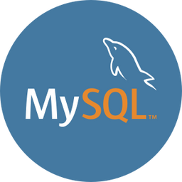

Introdução ao MySQL, instalação e configuração.
SQL (Structured Query Language): consulta, inserção e atualização de dados.
Consulta de dados complexa e uso de funções agregadas.
Manipulação de dados, transações e modelagem de dados.
Administração do banco de dados, gerenciamento de usuários e otimização de consultas.
Armazenamento avançado de dados e integração com linguagens de programação.
Replicação, escalabilidade e segurança.
Projetos práticos para aplicar os conhecimentos adquiridos.
Integração com frameworks web e solução de problemas comuns.

Requesitos
Um computador com um sistema operacional, como Windows, macOS ou Linux.
Acesso à internet para recursos online.
Um ambiente de desenvolvimento MySQL, que pode ser instalado localmente ou através de pacotes como XAMPP
ou WAMP.
Um editor de texto ou IDE para escrever comandos SQL.
Motivação e interesse em gerenciamento de dados e bancos de dados relacionais.
Um conhecimento básico de SQL é útil.
Documentação oficial do MySQL (mysql.com) e recursos de aprendizado online.
Prática constante por meio de consultas e projetos práticos.
Participação em comunidades de desenvolvedores MySQL para obter suporte e compartilhar conhecimentos.
Participação em comunidades e redes de desenvolvedores para apoio e aprendizado.
dependendo do nível do curso (iniciante, intermediário ou avançado) e dos objetivos do instrutor ou
programa
de estudo.